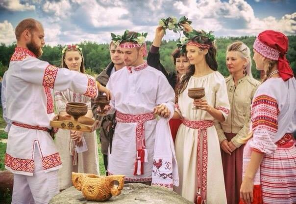

2026 Славянский этногенез.
Сегодня наследие древних славян проявляется в культурах современных славянских народов. Язык, традиции, фольклор и праздники сохраняются и передаются из поколения в поколение. В то же время, современные славянские народы активно развиваются, сохраняя связь с историей, но адаптируя её к новым условиям и глобализированному миру.

Среди славян распространены разные религии. Большинство исповедует христианство — православие, католицизм или протестантизм. Некоторая часть славян приняла ислам в результате османской оккупации Балкан (например, помаки, торбеши, горанцы, бошняки). Также есть атеисты. В прошлом славяне исповедовали язычество.
2026 Славянский этногенез.